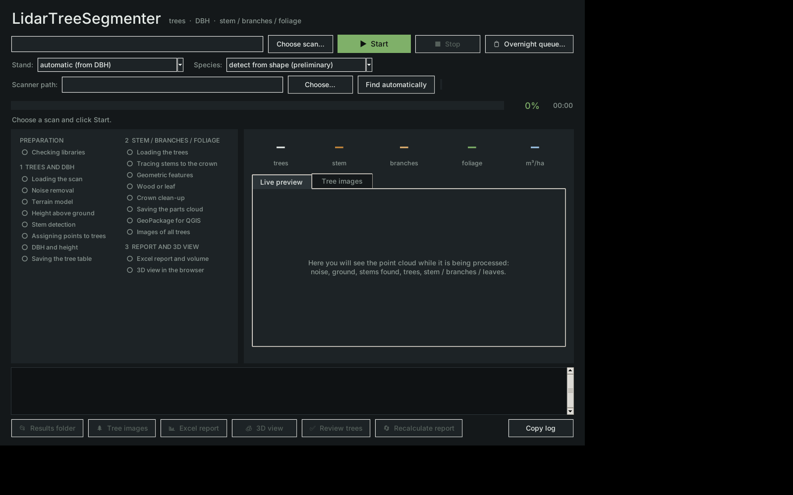
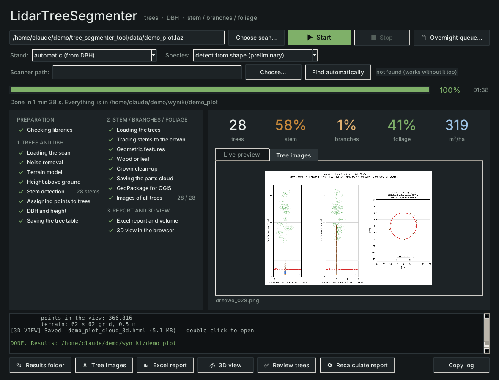
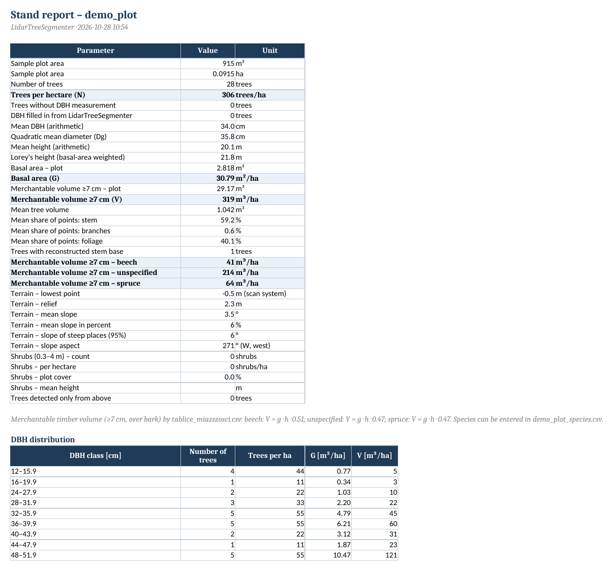
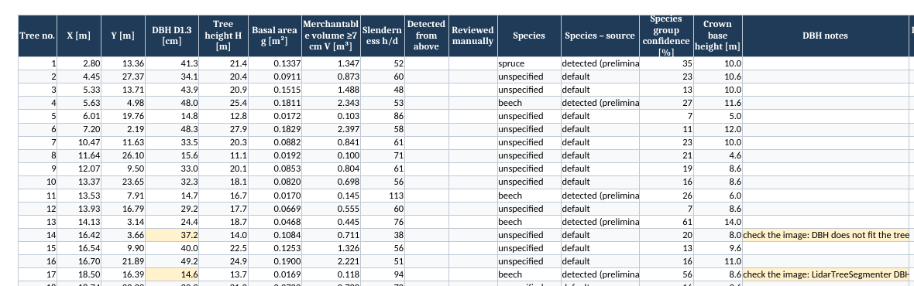
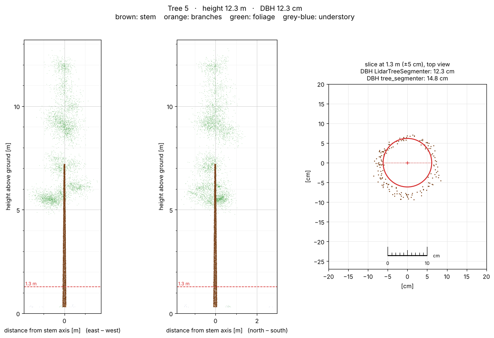
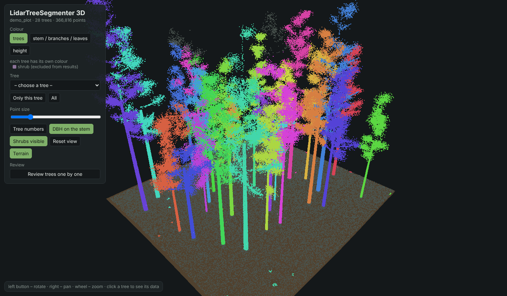
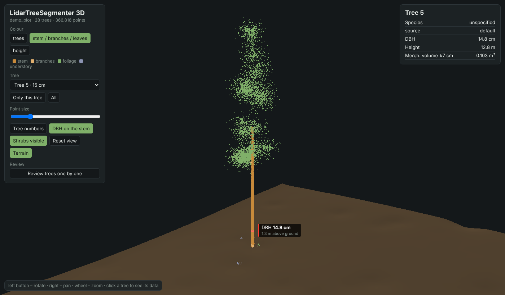
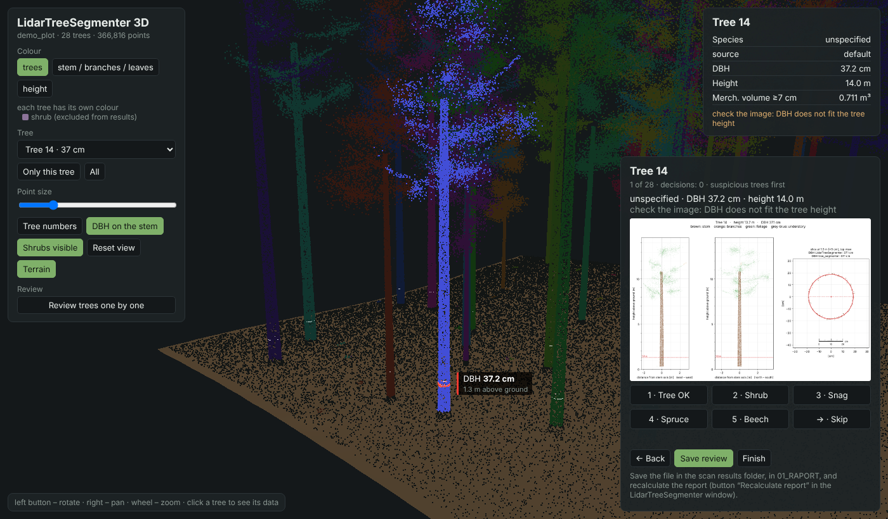

This manual is for someone who is working with a laser scan and with Python for the first time. How the program computes everything inside is described in a separate document, How it works (docs/how_it_works.pdf).
The screenshots and figures were made on a synthetic test plot (30 × 30 m, 28 trees) that you can generate yourself, see chapter 3.
A terrestrial or mobile laser scanner records a forest as a point cloud: millions of points, each one a single laser reflection from bark, a needle, a branch or the ground. The file has the extension .laz (compressed) or .las.
LidarTreeSegmenter takes such a file and by itself:
| What | Notes |
|---|---|
| A Windows computer | 16 GB of RAM is best. A scan of up to about 20 million points works with 8 GB. The Python scripts also run on Linux and macOS from the command line. |
| Python 3.10 or newer | Free, from python.org. Installation is described in chapter 2. |
A .laz or .las scan | Ideally cropped to the sample plot (for example a circle with a 20 m radius). |
| A browser (Chrome, Edge, Firefox) | For the 3D view. No internet connection needed. |
| Excel or LibreOffice | For the report. QGIS is optional (tree map). |
Go to python.org → Downloads, download the Windows installer and run it. On the first screen of the installer tick “Add Python to PATH”, and only then click “Install Now”. Without this box Windows will not find Python and the program will not start.
cmd and Enter. In the black window type python --version. If you see e.g. Python 3.12.4, everything is fine. If Windows opens the Microsoft Store or says it does not know the command, install Python again with “Add Python to PATH” ticked.Open the program folder and double-click INSTALL_ONCE.bat. A black window opens and text scrolls for a few minutes (libraries are downloaded from the internet). When “Done” appears, press any key.
The libraries are: laspy and lazrs (reading scans), numpy, pandas, scipy (computation), scikit-learn (machine learning), matplotlib (images) and openpyxl (Excel). They are listed in requirements.txt; on other systems install them with python -m pip install -r requirements.txt. If one is missing later, the program tries to install it by itself.
From now on you start the program with LidarTreeSegmenter.bat. You can make a desktop shortcut: right-click LidarTreeSegmenter.bat → Send to → Desktop (create shortcut).
LidarTreeSegmenter.bat | program window (start here) |
DRAG_SCAN_HERE.bat | processing without the window (drop a scan onto the file) |
INSTALL_ONCE.bat | library installation |
LidarTreeSegmenter_PL.bat, PRZECIAGNIJ_TU_SKAN.bat, ZAINSTALUJ_RAZ.bat | the same in Polish |
README.md | short description of everything |
klasy_drzewostanu.csv | settings for young and mature stands |
tablice_miazszosci.csv | volume formulas (can be replaced) |
TEMPLATE_field_measurement.csv | template for the field measurement file (GPS) |
docs\ | this manual, “How it works”, Polish documentation and a Python course (Polish) |
tree_segmenter_tool\ | tree detection used in stage 1, and a generator of a synthetic test plot |
program\ | program code, no need to look inside |
wyniki\ | created on the first run: the results of every scan |
python tree_segmenter_tool\90_make_test_forest.py. The scan appears in tree_segmenter_tool\data\las_testowy.laz, and the true values in las_testowy_prawda.csv. Options: --drzew 28 (number of trees), --nazwa my_plot (file name).Double-click LidarTreeSegmenter.bat. The dark program window opens.

Click Choose scan… and select a .laz or .las file. Faster: grab the scan file with the mouse and drop it onto LidarTreeSegmenter.bat in Explorer. The window opens with that scan and starts processing immediately (with the settings remembered for this scan, or the defaults).
| Choice | When | What it changes |
|---|---|---|
| young | DBH usually 8–20 cm | looks for thinner stems; a shrub is an object lower than 5 m; understory up to 1.5 m |
| mature | DBH above 20 cm | looks for thicker stems; a shrub is lower than 10 m; understory up to 3 m |
| automatic | when you do not know | the program picks the class from the median DBH |
The exact numbers are in klasy_drzewostanu.csv. You can open it in Excel or Notepad and change them.
detect from shape: the program guesses spruce or beech from the crown shape. spruce only or beech only: when you know that the plot has one species. If you know it, choose it: in a dense stand crowns overlap and shape-based recognition makes mistakes (in a pure spruce plot it can label a dozen spruces as beeches). The window remembers the stand class and species separately for every scan.
A scan of 15 million points takes about 25–35 minutes; the synthetic test plot takes about a minute. You can use the computer in the meantime, but do not close the window. ■ Stop interrupts processing; whatever is already computed stays on disk.

| Place | What is there |
|---|---|
| Progress bar | percent of the whole run, time since start, and below it the name of the current step. |
| List on the left | all stages in order: ✓ done, ● running, ○ waiting. Three groups: 1 trees and DBH, 2 stem / branches / foliage, 3 report and 3D view. |
| Numbers top right | number of trees, mean share of stem, branch and foliage points, and finally the volume in m³/ha. |
| Live preview | the cloud from above and from the side. It changes with the stage: after noise removal, height above ground, stems found (red circles), trees in colours, and at the end stem (brown), branches (light brown), foliage (green), understory (grey-blue). |
| Tree images | second tab; shows the tree images as they are created. |
| Log (bottom) | a text record of the run. Copy log copies it to the clipboard so you can paste it into a message (or to an AI assistant) when something goes wrong. |
| Buttons at the bottom | become active when the given result is ready: Results folder, Tree images, Excel report, 3D view, Review trees, Recalculate report. |
Every scan has its own folder wyniki\<scan name> (wyniki = results). The quickest way to open it is the Results folder button. Inside are subfolders and a README.txt describing every file. Folder names are Polish in both language versions.
| Subfolder | Main files | What for |
|---|---|---|
01_RAPORT (report) | <scan>_REPORT.xlsx, 00_SUMMARY.txt, <scan>.gpkg, <scan>.qgs, <scan>_species.csv, _sprawdzenie.csv, _field.csv | results to work with: Excel, map, your corrections |
02_CHMURY (clouds) | _segmenty.laz, _czesci.laz | clouds for CloudCompare (tree number and tree part for every point) |
03_TABELE (tables) | .csv and .json files | intermediate tables, for the program and advanced users |
04_OBRAZY_DRZEW (tree images) | drzewo_001.png, drzewo_002.png … | an image of every tree for checking |
05_DZIENNIK (log) | dziennik_*.txt | record of the run |
06_WIDOK_3D (3D view) | _cloud_3d.html, _review.html | 3D cloud in the browser |
The tree number is the same everywhere: in Excel, on the image, in the 3D view and in QGIS.
The Excel report button opens 01_RAPORT\<scan>_REPORT.xlsx. It has several sheets (tabs at the bottom of Excel).

| Row | Meaning |
|---|---|
| Sample plot area | area of the scan in m² and ha, from the extent of the cloud. |
| Number of trees per ha (N) | number of trees converted to one hectare. |
| Mean DBH | plain average of the DBH values. |
| Quadratic mean DBH (Dg) | DBH of the tree with the mean basal area; used in forestry more often than the plain mean. |
| Lorey's height | mean height weighted by basal area: thick trees count more. |
| Basal area (G) | sum of stem cross-section areas at 1.3 m, in m²/ha. |
| Merchantable volume (V) | volume of wood thicker than 7 cm, in m³/ha. The formulas are in tablice_miazszosci.csv. |
| Share of stem, branches, foliage | mean percentage of cloud points in each tree part. |
| Trees with reconstructed stem base | stem hidden by understory, the base extended from the stem shape. |
| Excluded as shrubs / Rejected – no stem / Snags | how many detected “trees” were left out as shrubs (solid cross-section instead of a stem), how many were rejected because the cylinder check found no stem there, and how many stayed as snags. These rows appear only when there is something to count. |
| Shrubs (0.3–4 m) | number of shrubs, per hectare, the share of the plot they cover from above and their mean height. The list is in the Shrubs sheet. |
| Split trees / forked | how many trees had a second separate stem and were split, and how many fork above 1.3 m (one tree). |
| Trees detected only from above | stems found only above the understory (2.5–8.5 m). |
| DBH distribution | number of trees in 4 cm diameter classes. |

Every row is one tree. The main columns: number (as on the image), position x, y, DBH [cm] and its source, height [m], species and where it comes from, volume [m³], share of stem / branches / foliage, Checked manually, Detected from above, and notes. The headers have a filter, so you can for example show only trees with notes.
Shrubs: every shrub with its position, area from above [m²], height (95 % of shrub points lower) and highest point. Settings: the settings used, described in sentences. Explanations: what every column means. Field measurement: only when you add a field measurement file (chapter 12). The same summary is in plain text in 00_SUMMARY.txt (opens in Notepad).
The Tree images button opens the folder 04_OBRAZY_DRZEW. Every tree has an image drzewo_NNN.png with the number used in Excel. The easiest way to browse them is with the arrow keys in the ordinary Windows photo viewer.

Colours: brown stem, light brown branches, green foliage, grey-blue understory, blue reconstructed stem base. The title shows DBH, height, species and any warning (e.g. “PROBABLY A SHRUB”).
The 3D view button opens 06_WIDOK_3D\<scan>_cloud_3d.html in the browser. It works without internet. You can e-mail the file to someone; it opens on any computer.

| Action | How |
|---|---|
| Rotate | left mouse button and drag |
| Move | right mouse button and drag |
| Zoom | mouse wheel |
| Tree data | click a tree or choose it from the “Tree” list |
| Colours | buttons “trees”, “stem / branches / leaves”, “height” |
| One tree | “Only this tree”, back: “All” |
| Tree numbers | button “Tree numbers” |
| DBH on the stem | a white ring on every stem 1.3 m above ground; the clicked tree gets a red ring labelled with its DBH. The same button switches the rings off. |
| Shrubs | shrubs are purple; clicking a shrub shows its height and area. “Shrubs visible” hides them together with objects left out as shrubs. |
| Lost? | “Reset view” |
| Path and terrain | “Scanner path” and “Terrain” switch the yellow walking line and the ground surface (when available) |
| Walk-through | group “Scanner walk-through”, see chapter 14 |

Click a tree and a red ring appears on its stem 1.3 m above ground, labelled e.g. “DBH 36.4 cm”. The ring has the diameter from the report, so you can see at once whether it fits the stem: it should lie on the bark. A ring that is too wide or too narrow, or a ring in branches or in a shrub, means a tree to check (chapter 9). The other trees have thin white rings.
The ring is at the same height where the DBH is measured: 1.3 m above the ground computed under each stem point. On a steep slope the ground on the downhill side is lower, so the stem goes further below the ring there. The cloud is thinned to 600,000 points to keep the file light.
Start alone gives a result in which the program decides everything. When the result has to be reliable (for work or a contract), review the trees. For a plot with 60 trees this takes about 10 minutes.
Click Review trees. The 3D view opens directly in review mode. The program shows the trees one by one, the suspicious ones first: shrubs, snags, objects without a stem, uncertain trees and trees without DBH.

| Key | Decision |
|---|---|
| 1 | tree OK: goes into the results |
| 2 | shrub: left out of the results |
| 3 | snag: stays, volume from the measured stem |
| 4 / 5 | spruce / beech (can be added after 1, e.g. 1 then 4) |
| → | skip (the program's decision stays) |
| ← | back to the previous tree |
Clicking the image enlarges it. Decisions are saved in the browser as you go, so you can stop and come back later.
Click Save review. The browser asks where to save the file (or puts it in Downloads). Save it as <scan>_sprawdzenie.csv in wyniki\<scan>\01_RAPORT. If it ended up in Downloads, move it there by hand.
In the program window click Recalculate report. Only the report and the 3D view are recomputed, in a few seconds, without processing the cloud again. Your decisions override the program's, and in Excel such trees have “yes” in the column “Checked manually”.
nr;decyzja;gatunek (number; decision; species), e.g. 15;shrub; or 22;snag;spruce. English and Polish values are both accepted. You can open and correct it in Excel or Notepad, then click Recalculate report again.There are four ways, from the simplest:
markPoint.csv from the raw session folder and assigns the species to the nearest stem if the tag is closer than 1 m. You do not need to do anything: Start or Recalculate report is enough. In Excel such trees have “scanner tag (FI)” in the column “Species – source”, and the GeoPackage has a layer etykiety_skanera (also with unassigned tags, so you can see which ones missed a stem).01_RAPORT\<scan>_species.csv in Excel and type the species in the column gatunek_reczny (e.g. spruce, beech, fir). Save as CSV and click Recalculate report.Tag codes the program knows: FI spruce, BU beech, TA fir, KI pine, LA larch, EI oak, AH sycamore, ES ash, KR cherry, UL elm, taxus yew. Polish abbreviations (SW, BK, JD, SO, MD, DB) also work. An unknown code is skipped and mentioned in the summary. Order of priority, most important first: tree review, species file, scanner tags, whole-plot species, recognition from shape.
The volume formula depends on the species. The formulas are in tablice_miazszosci.csv: by default general V = g·h·f, with form factor f 0.47 for spruce and 0.51 for beech. A species not in the table uses the formula of its group: coniferous (fir, pine, larch, Douglas fir, yew) 0.45, broadleaved (e.g. sycamore, oak, ash) 0.50. You can replace the file with regional tables; the format is described at its top.
When you have several or a dozen scans, set them up in the queue in the evening and leave the computer overnight. In the morning a summary of all plots is waiting in the wyniki folder.
Click Overnight queue…. You can also drop several scan files or a whole folder onto LidarTreeSegmenter.bat: the queue opens by itself with those scans.
Add files… (select many with Ctrl) or Add folder… (takes all .laz and .las files, also from subfolders, and skips the wyniki folder). The ↑ ↓ arrows change the order, Remove selected removes from the list (not from disk).
Select scans (Ctrl or Shift + click), choose stand class and species at the top and click Set. Every scan can have different settings.
Skip stages already computed (recommended): a scan computed earlier is not computed again; only what is missing or changed is done (e.g. a new review or field measurement file). When finished: do nothing, sleep or shut down the computer. Before sleep or shutdown there is a one-minute countdown with a Cancel button.
Scans are processed one after another, and the main window shows the current one (“Queue: scan 3 of 8”). The Status column in the queue window: waiting, running, done, done earlier (nothing to compute), error. An error in one scan does not stop the others. The computer does not go to sleep while processing.
After each scan the file wyniki\KOLEJKA_<date>_<time>.xlsx is saved: one row per plot (status, time, stand class, species, area, number of trees, N/ha, Dg, Lorey's height, G/ha, volume, V/ha, shrubs, snags, error description) and the mean of the computed plots at the bottom. The log of each scan is in its 05_DZIENNIK.
A scan is in the scanner's own coordinate system: the origin where the scanner started, directions arbitrary. To put the results in the right place on a map, measure a few trees in the field (e.g. 5) with a GPS receiver (e.g. a Garmin) and a tape. The program finds these trees in the scan, rotates and shifts the scan into field coordinates and compares the DBH values.
Copy TEMPLATE_field_measurement.csv and name the copy <scan>_field.csv. Open it in Excel or Notepad and enter the trees:
nr;lat;lon;dbh_cm;species;height_m 1;49.61234;20.71456;34;spruce;26 2;N49 36.742;E20 42.880;41;spruce; 3;49.61251;20.71470;28;;
Coordinates can be decimal degrees (with a dot or a comma) or the Garmin notation (N49 36.742). Species and height are optional. Instead of degrees you can give x;y;epsg, e.g. in EPSG 2180. You can also provide the Garmin waypoints as <scan>_field.gpx (waypoint name = tree number) and enter only the number and DBH in the CSV.
In wyniki\<scan>\01_RAPORT or next to the scan file. Click Recalculate report (or Start).
A sheet “Field measurement” appears in Excel: which scan tree is which field tree, DBH difference, GPS error in metres, scan rotation and the match rating: good, uncertain or weak. The file 01_RAPORT\<scan>_georef.gpkg is also created, with all layers in field coordinates (UTM by default; another system: python program\30_raport.py wyniki\<scan> --epsg 2180).
odchylki_gps in QGIS and add one or two trees in the field.The folder 01_RAPORT has two files for QGIS: <scan>.gpkg (map of trees and terrain, all data) and <scan>.qgs (QGIS project). Double-click the .qgs file and QGIS opens all layers in the right order, with colours and labels. Nothing needs to be set up.
You can also drag just the .gpkg file into the QGIS window and select the layers. The styles are stored in the file, so the layers look the same; only the order has to be arranged by hand (terrain at the bottom, trees on top). Layer names are Polish:
| Layer | Contents | At start |
|---|---|---|
drzewa (trees) | a point for every stem with all the report data (DBH, height, species, volume, notes); colour by species, size by DBH, label = tree number | visible |
etykiety_skanera | species codes recorded with the scanner; blue triangle = assigned to a tree, red = too far from a stem | visible |
przekroj_1_3m, przekroj_3m | stem circles at 1.3 m and 3 m with diameter, circumference coverage and stem-check result | 1.3 m visible |
punkty_1_3m, punkty_3m | cloud points in a ±5 cm slice, one colour (red at 1.3 m, blue at 3 m); field czesc says whether a point is stem, branch, leaves or understory, odl_od_okregu_cm is the distance from the stem circle | hidden, drawn from scale 1:400 |
krzewy (shrubs) | outline of every shrub (purple) with area and height; label = height | visible |
sciezka_skanera | the walking line of the scanner, when a path file was available | visible |
warstwice | contour lines, every fifth one bold and labelled (field glowna) | visible |
teren_cieniowanie, teren_wysokosc, teren_spadek | terrain model as rasters: coloured hillshade, ground elevation, slope in degrees (chapter 14) | hillshade visible |
A hidden layer is switched on by ticking the box next to its name in the Layers panel. Click a tree with the “Identify features” tool to see its data. Right-click a layer → Open attribute table shows all trees like in Excel.
.laz files.A scan without a field measurement has scanner (local) coordinates. QGIS shows it in the system “LidarTreeSegmenter – local scan system (metres)”: the scale bar and scale are correct, but the map will not match a basemap. For a basemap open <scan>_georef.qgs or _georef.gpkg from chapter 12. That project also has the layers pomiar_terenowy (field measurement, blue triangles) and odchylki_gps (red lines from the scan tree to the field point).
A handheld (SLAM) scanner usually saves a second file next to the cloud: the scanner path (trajectory), i.e. the line you walked. The program works without it, but when it is there, the results tell you more.
It looks by itself. It takes a file that has the same scan code in its name and one of the words Trajectory, traj, sciezka, path, odom, pose, track (e.g. _N0h_Trajectory.las for _N0h__r25.laz). It looks next to the scan file, one folder up and in wyniki\<scan>\01_RAPORT. The window shows the file found in the Scanner path row.
If the file is named differently, click Choose… and select it. Find automatically clears the choice. The choice is saved for the scan when you click Start or Recalculate report. You can also put the file in as 01_RAPORT\<scan>_sciezka.csv (or another extension).
| Format | Examples |
|---|---|
.las, .laz | trajectory from the scanner software |
.txt, .csv, .xyz, .pts, .asc | exports from GeoSLAM, Emesent, ROS, TUM, KITTI, plain x y z columns; separator, decimal comma and header are detected automatically |
.ply | text and binary |
The path must be in the same coordinate system as the scan. If it lies elsewhere (e.g. exported in UTM while the scan is local), the program skips it and says so in the log.
sciezka_skanera, and the same two values in the trees layer.When a path is available, the 3D view menu has a group Scanner walk-through. Click ▶ Play walk-through: a red ball moves along the path, and the cloud points appear when the scanner comes closer than 10 m (red circle). This shows the order in which the forest was scanned and which places the scanner only passed from afar. The upper slider moves to any point of the path, the lower one sets the speed (1–20 m/s), Camera follows scanner moves the view with the ball and Whole cloud ends the animation. To make a video, record the screen (Win + Alt + R or the Snipping Tool in recording mode).
From the ground points the program computes an elevation grid with 0.25 m cells (the same ground from which tree heights are measured). No extra file is needed.
teren_wysokosc (elevation), teren_spadek (slope) and teren_cieniowanie (hillshade), and the layer warstwice (contours). The contour interval is chosen automatically: 0.25 m on flat ground, 0.5 m with relief up to 10 m, 1 m on slopes.Heights are in the scan's coordinate system, not above sea level. The _georef.gpkg file from chapter 12 gets contours and the path in field coordinates; the rasters stay only in the ordinary .gpkg.
The whole program window, messages, Excel report, GeoPackage and 3D view exist in English and Polish. LidarTreeSegmenter.bat and DRAG_SCAN_HERE.bat start the English version; LidarTreeSegmenter_PL.bat and PRZECIAGNIJ_TU_SKAN.bat the Polish one. Results go to the same wyniki folder and the numbers are identical; only the texts change. The language is set by the environment variable LTS_LANG (en by default, pl for Polish), which also applies when you run the scripts in program\ from the command line.
Folder names in wyniki, some layer and file names, and the code comments are Polish in both versions. Files you type yourself (species, review, field measurement) accept English and Polish values.
Most often Python is not in PATH. Check python --version (chapter 2). If Python is there, run INSTALL_ONCE.bat once.
Run INSTALL_ONCE.bat and read what it says at the end. An internet connection without a company proxy often helps. If it still does not work, copy all the text from the black window and include it in your question.
Out of memory. Close other programs (a browser with many tabs). A large scan (40 million points or more) needs about 8 GB of free memory; crop it in CloudCompare to a circle with a 20 m radius.
Click Copy log and paste the text together with a description of what you did. The log of every run is also in 05_DZIENNIK.
This happens with stems growing very close together or fused at the base. The program looks for a second stem in every tree: reaching high (at least 4 m and 40 % of the tree height), straight, round and standing next to the main stem. When the second stem is visible separately at 1.3 m (or stands clearly apart), it becomes a new tree with the next number; the notes of both trees say “fused with tree …”. A fork above 1.3 m is one tree by forest mensuration rules and gets the note “fork at … m”. When the program is still wrong, mark the extra tree as a shrub in the review (chapter 9).
The cylinder check removes objects in which no real stem can be found (shown as “no stem”, grey in Excel, not in totals). If such an object is still counted, mark it as a shrub in the review.
Look at the cross-section on the tree image. If the circle does not lie on the bark, mark the tree in the review. When the two methods disagree, the report chooses the one that fits the height curve and says so in the notes.
Choose “spruce only” in the window (chapter 3). Species recognition from shape in a dense stand is weak.
See the box in chapter 12. Most often the trees are too close to the centre or have similar DBH. Add a tree in another direction.
The file must be in wyniki\<scan>\01_RAPORT and be named exactly <scan>_sprawdzenie.csv (browsers sometimes add “(1)” to the name). Then click Recalculate report.
Open the file in Chrome or Edge. An old browser or disabled graphics acceleration may not support 3D (WebGL).
Yes, but heavy programs slow processing down and take memory. Do not close the program window.
Yes, these are only results. Start computes them again. Do not delete the scan itself.
| Term | Meaning |
|---|---|
| TLS / MLS | terrestrial laser scanning (scanner on a tripod) / mobile laser scanning (handheld or carried scanner). |
| Point cloud | a set of x, y, z points, the result of scanning. |
| .laz / .las | point cloud file formats; .laz is a compressed .las. |
| DBH (D1.3) | stem diameter at 1.3 m above the ground. |
| Dg | DBH of the tree with the mean basal area (quadratic mean diameter). |
| Lorey's height | mean tree height weighted by basal area. |
| G/ha | basal area: sum of stem cross-section areas at 1.3 m per hectare. |
| V/ha | volume: wood volume per hectare, in m³. |
| Merchantable timber | wood thicker than 7 cm (over bark). |
| Form factor | the ratio of the tree's volume to a cylinder with the same DBH and height. |
| Snag | a broken tree: low and thick, stem empty inside its cross-section. |
| Understory | shrubs and young trees in the lowest forest layer. |
| Shrub (in the report) | a body of branches and leaves 0.3–4 m above ground outside the stems, at least 0.5 m² from above. |
| Segmentation | splitting the cloud into individual trees. |
| Terrain model (DTM) | the ground surface computed from the lowest points. |
| GeoPackage (.gpkg) | a file with map layers, opened in QGIS. |
| EPSG 2180 | the Polish national coordinate system PL-1992. |
| CloudCompare | a free program for viewing and cropping point clouds. |
| QGIS | a free mapping (GIS) program. |